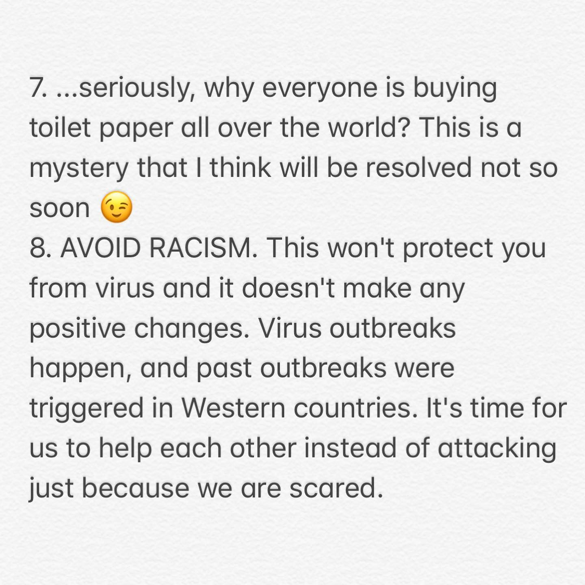
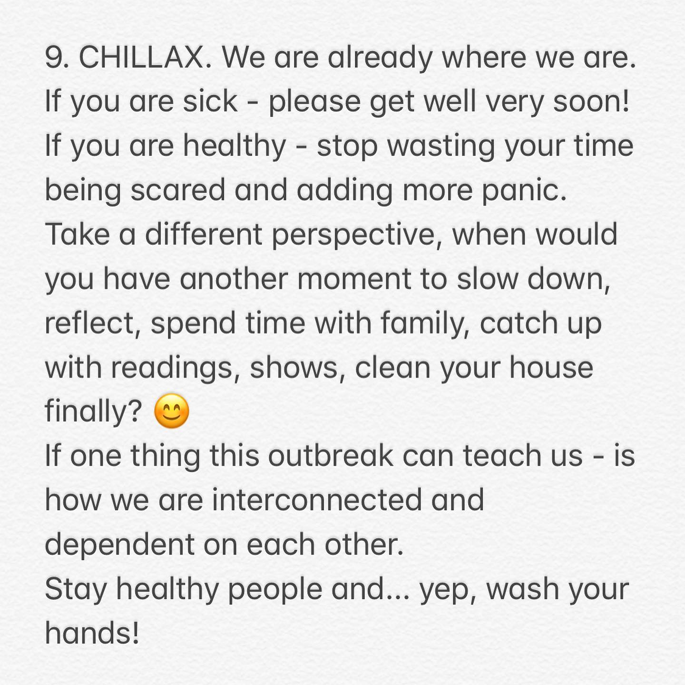
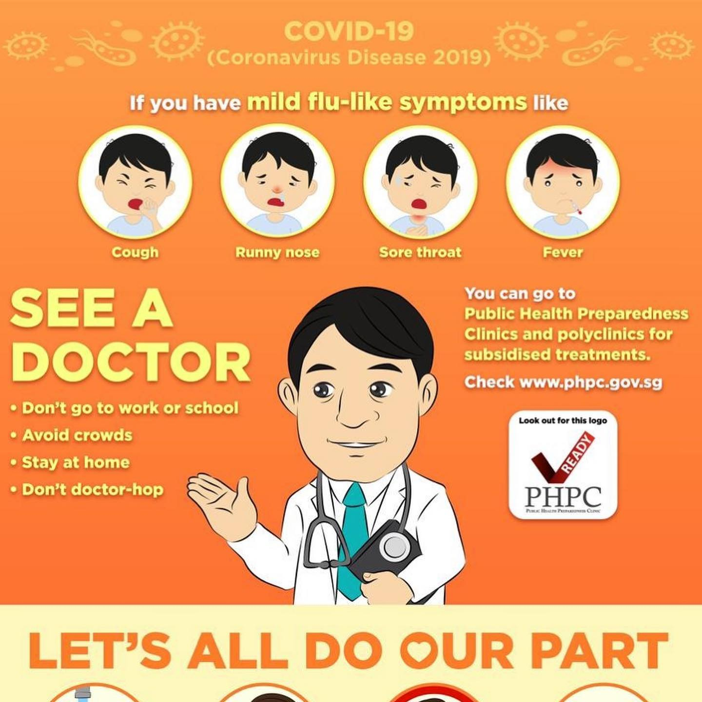
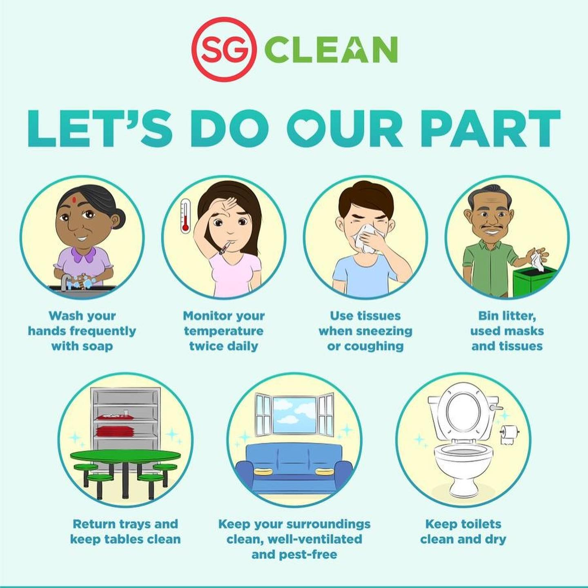
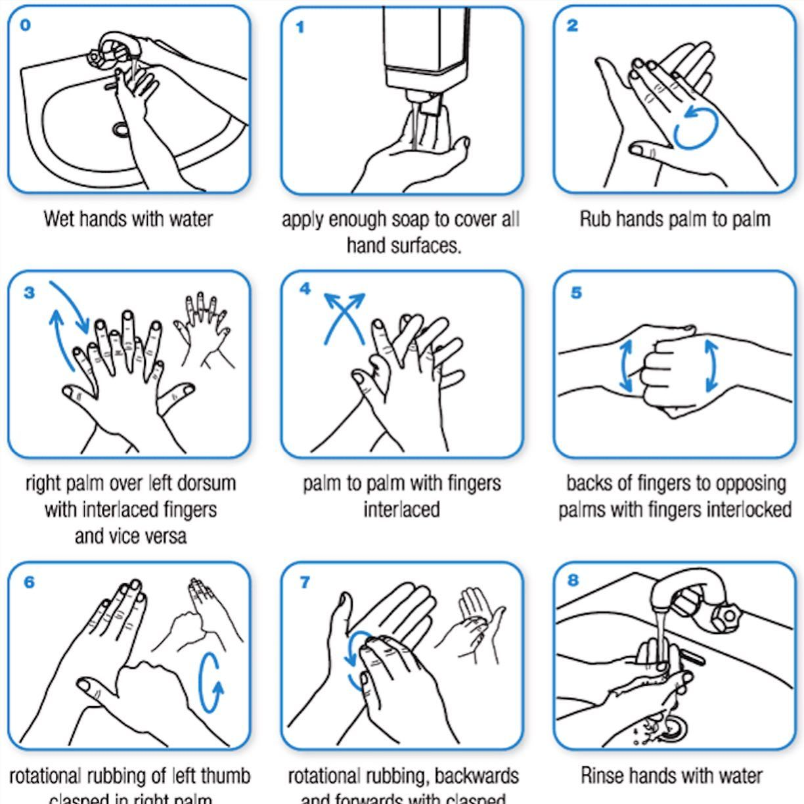
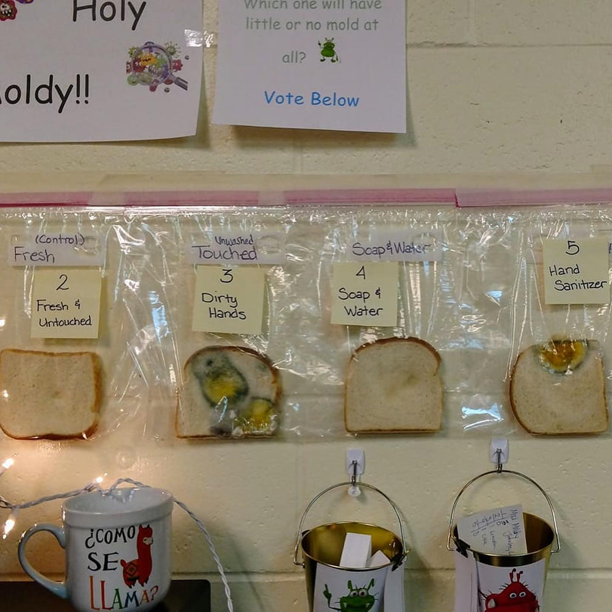

#COVID19 reality... just kidding 😜! This is a blast from the past: 2015 fires in Indonesia, 400+ PM2.5 haze level in Singapore. We post this to support y'all out there. It's a tough time, everything is at threshold: healthcare systems, governments, supply chains. However, the most important test is a COMMON SENSE and HUMANITY one... #Singapore was one of the first countries hit by COVID-19 in late Jan. What many countries are going through now ( #panic, #hoarding food and toilet paper) - we've gone through this. Split shifts at work & limited social interactions are new normal. We feel lucky that in such tough times we're not anywhere but in Singapore, and truly grateful to Singapore government for excellent execution of a response playbook based on #H1N1 and #MERS lessons learned from decades ago. We were country #2, right after China with COVID19 cases in early Feb, now we are #29 with 313 cases, almost half of them discharged, and NO DEATHS TO FAR. So here's what we learned during past 2 months: 1. MASKS ARE FOR SICK PEOPLE. They don't help healthy to protect them from virus. If you piled up on them but someone being sick - pass the masks to THEM, they need it more. 2. STOP FAKE NEWS. There's NO SILVER BULLET. There's no vaccine yet, eating garlic or not drinking water advice are ridiculous. It's COVID19 vs. your immune system. Eat healthy, sleep well. 3. FOCUS ON HANDS AND EYES. Virus is spreading by surfaces and interactions. Wash hands longer and more frequently. Your standard soap bar is more powerful than anything else, including hand sanitisers. And hey, wipe your phone, huh. 4. STAY IN IF SICK. Seriously, not the best time to show everyone how hardworking you are. Isolate yourself and take time off to recover. Need to go out - WEAR A MASK. 5. AVOID CROWD. Practice social distancing. If you travelled - stay at home and limit interactions. 6. DON'T PANIC. Hoarding of groceries will only disrupt supply chain and consume space in your house. Instead of buying noodles, rice, canned food & toilet paper, get more veggies and fruits - much better for your immune system. Continue reading in carousel... __ #coronavirus #stayhealthy #socialdistancing #wfh
2020-03-19 10:41:02
Back to main page